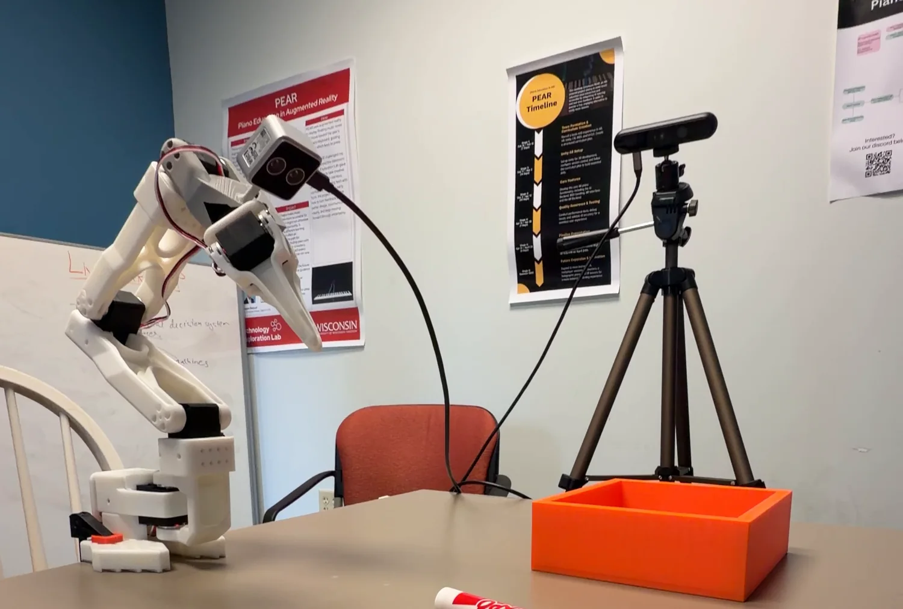

Physical AI & Robot Learning
Hardware and simulation bring-up for a robot-learning setup: SO-101 leader/follower arms, a depth camera, and Isaac Sim running on a remote GPU machine.

Bringing up the arms
A leader/follower pair is the simplest useful teleoperation setup: you move the leader arm by hand, the follower mirrors it, and the resulting joint trajectories become demonstration data. Simple to describe; a long list of small, unforgiving steps to actually stand up.
I assembled and calibrated both SO-101 arms and an Orbbec Astra 2 Pro RGB-D camera: motor-ID assignment, serial communication, controller configuration, teleoperation testing, and validating that depth recordings were actually being captured rather than silently dropping frames.
Simulation on borrowed hardware
The other half was standing up Isaac Sim 6.0.1 on a remote DGX Spark through Docker, driven over browser-based streaming, with no local GPU and no display attached to the machine doing the rendering. I configured environments both with and without domain randomization for sim-to-real work.
What I'd tell you in an interview
This is infrastructure work, and I'd describe it that way rather than inflate it. What I can speak to is hardware bring-up, calibration, serial debugging, containerized deployment of a heavy simulator on a remote machine, and the specific ways depth capture fails quietly. What I did not do here is train a policy, measure transfer, or publish a result, so those aren't claims I'll make.